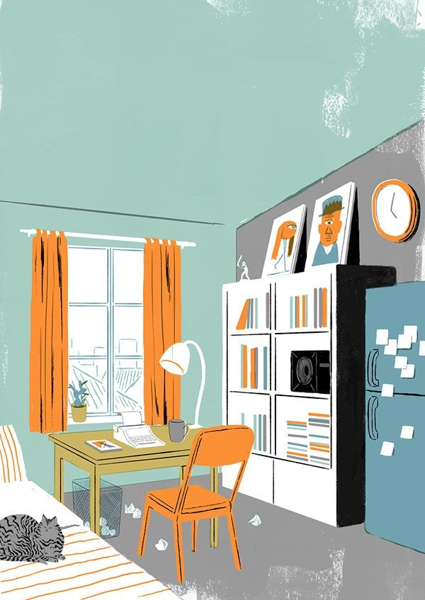

10 Little Known Facts That Affect Your Studies
"Education is not the preparation for life; education is life itself," says John Dewey.
When we were young, studying was fun for many. We enjoyed studying textbooks with so many colourful illustrations. How about now?
We feel easily exhausted, long hours of study are difficult these days. Have you ever thought about the reason behind it? That's basically because of the distractions we face as we are growing old. But a problem often comes with a solution in hand and to deal with it, you first have to discover such problems. Here are 10 little known facts that affect your studies. .
1. AVOID FILLERS
Do not write unnecessary things. You do want to write extra and extra. In short, cut the crap. Keep the content short and crisp. By short, we do not mean that you stop writing even the main points. So, make sure that you write all those points which will help you to understand the content in the shortest way possible.
1) No Suitable Notes
Note making is an art, it requires precision. You always have to make sure if the notes you are trusting for your academics are up to the mark and using the right information.
2) No Specific Time to Study
You cannot just sit anytime with your books, you need to take out time from your schedule and carefully select a specific timing which you can follow every day with zero chances of failure. .
3) Family Distractions
No child in any home is spared by chores given by their family. If this often happens during your study hours, learn to say a direct 'No' and ask them to wait for a while. Remember, you don't have to say 'No' to help your family though. .
4) Distraction from Friends
You may look at your friends and feel complex for so many things. But you must realize there has to be no connection with your academics.
Make a check on your friends, if they think good for you, they won't let you get into such situations where you get distracted. Rather, they will help you to cope up with your studies. .
5) No Breaks
You don't have to overdo things. You must reward yourself each time you complete a milestone while you read. Take short breaks and eat something good. This helps your retaining abilities. .
6) Over-Highlighting
Be careful what you highlight. Sometimes, you only focus on what you've marked as important and then you don't even pay attention to what stays unmarked. You may be skipping important things this way. .
7) Missing Diagrams and Flowcharts
If you're just a theoretical person, you must focus on diagrams and flowcharts. They are important elements of mind-mapping. If you're skipping these, it will be affecting your quick learning process.
8) Multitasking
It isn't meant for everyone. A few people might be able to manage but many would not be able to adapt themselves with multitasking. If you're one such person, take it easy. You can proceed step by step.
9) Comfort while you Read
We tend to solve problems faster when there is no comfort. If you sit in a comforting position while you read, you're a procrastinator. A formal position with your back straight will keep you focussed.
10) Your Target Goal
It's okay if you have different goals. For example, if you're certain to go for a specific field but you are supposed to study a different subject as a part of your course, you take the subject lightly. What you must understand is that It may not help you with your specific field but it will help you to score and reach your goal. So you must give it equal importance like other subjects to make it more.
However, these are just a few factors that affect your performance. There can be many more to deal with. All you have to do is reorder your priorities.
By –
Sameer Hussain
Tags: #corruption, #EvilsOfCorruption, #socialevil, #ECONOMIC EVIL, # POLITICAL EVIL, #notespickup, #notes, #trends
Leave a Suggestion